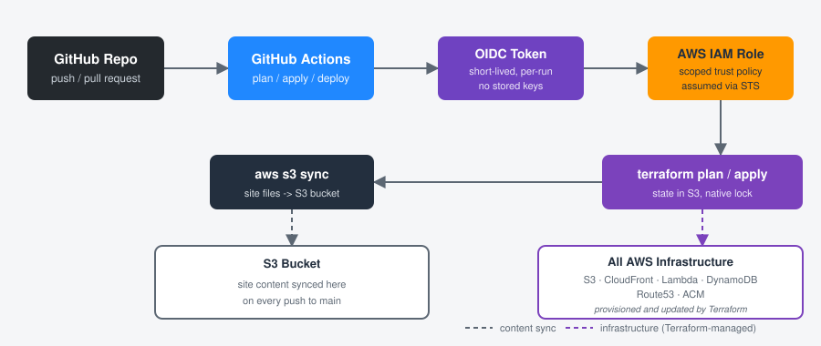

Moving My Website to a Real CI/CD Pipeline with GitHub Actions
Migrating my Terraform-managed AWS infrastructure onto GitHub, with OIDC-based deployments and no long-lived credentials.

My website's infrastructure has always lived on my local machine. Terraform files, edits, applies, all of it happened from my desktop with credentials sitting on my hard drive. It worked, but it wasn't something I could point to and say "this is how I'd actually run infrastructure at a job." So I decided it was time to move the whole project onto GitHub and build a real CI/CD pipeline around it using GitHub Actions.
Why This Project First
I have two personal projects that could have made this jump: this website, and a Discord bot running on EC2. I picked the website first on purpose. Its deploy flow is just syncing static files to S3 and applying Terraform, no servers to SSH into, no service to restart, nothing that could go down mid-deploy. It felt like the right place to learn the pattern before applying it somewhere with more moving parts.
OIDC Instead of Access Keys
The first real decision was how GitHub Actions would authenticate to AWS. The old-fashioned way is storing long-lived AWS access keys as GitHub secrets, but that's exactly the kind of thing I wanted to avoid on a resume-facing project. Instead, I set up an OpenID Connect (OIDC) trust relationship between GitHub and AWS. GitHub issues a short-lived signed token for each workflow run, and AWS verifies that token against an IAM role's trust policy before handing out temporary credentials. No stored keys, nothing to rotate, nothing to leak.
Getting the trust policy right took more iterations than I expected. My first version scoped access using the token's sub claim matched against a plain repo:owner/repo:ref:refs/heads/main string. It failed immediately on a pull request, since GitHub formats that claim differently depending on the event type. Then, once I broadened it, I ran into something I hadn't seen documented anywhere obvious: GitHub had appended my account ID and repo ID directly into the claim, like repo:Zach116@8534562/personal-website@1345430038:pull_request, since GitHub adds numeric IDs to prevent a renamed account or repo from inheriting trust meant for a previous owner. The fix was conditioning on the plain repository claim instead, alongside a wildcarded sub match to satisfy AWS's requirement that the trust policy scope on sub or job_workflow_ref specifically.
condition {
test = "StringEquals"
variable = "token.actions.githubusercontent.com:repository"
values = ["Zach116/personal-website"]
}
condition {
test = "StringLike"
variable = "token.actions.githubusercontent.com:sub"
values = ["repo:Zach116*/personal-website*:*"]
}
Migrating Terraform State to S3
My state file had always lived locally. Moving it to a shared backend was non-negotiable for this to work, since GitHub Actions needs to read and write the exact same state my local machine uses. I stood up an S3 bucket for state (with versioning and encryption enabled), migrated my existing state into it, and pointed my main configuration at the new backend. I also picked up Terraform's newer native S3 locking feature instead of the older DynamoDB-based lock table, one less piece of infrastructure to manage for a project this size.
Scoping the IAM Policy the Hard Way
This was, by a wide margin, the most time-consuming part of the whole project. I built a custom IAM policy for the GitHub Actions role rather than reaching for broad managed permissions, and every single AWS resource type in my config, S3, Lambda, DynamoDB, CloudFront, ACM, Route53, API Gateway, has its own set of read-only calls Terraform makes during a plan to check for drift, on top of the actual write actions needed to manage it. I found this out the hard way, one AccessDenied error at a time, across dozens of workflow runs.
Eventually I stopped fixing errors one at a time and used CloudTrail to pull the complete list of every API call the role had actually made during a run, cross-referenced it against my policy, and closed every remaining gap in one pass. AWS also has an IAM Access Analyzer feature that generates a policy directly from CloudTrail activity, which would have saved a lot of the manual cross-referencing, worth knowing about for next time. What I ended up with is a policy scoped down to specific resource ARNs and specific actions per service, not a single wildcard permission across an entire service.
The Finished Pipeline
The workflow now runs on every push and pull request against main. Pull requests trigger a terraform plan only, giving me a diff to review before anything touches real infrastructure. Merging to main runs plan, apply, and then syncs my site files to S3 in sequence.
jobs:
terraform:
steps:
- uses: aws-actions/configure-aws-credentials@v4
with:
role-to-assume: arn:aws:iam::762233764200:role/github-actions-website-deploy
aws-region: us-east-1
- run: terraform plan
- if: github.ref == 'refs/heads/main' && github.event_name == 'push'
run: terraform apply -auto-approve
deploy-site:
needs: terraform
if: github.ref == 'refs/heads/main' && github.event_name == 'push'
steps:
- uses: aws-actions/configure-aws-credentials@v4
with:
role-to-assume: arn:aws:iam::762233764200:role/github-actions-website-deploy
aws-region: us-east-1
- run: aws s3 sync ./site s3://my-site-12123123122 --delete
Lessons Learned
- OIDC is genuinely worth the setup cost. Not needing to store or rotate AWS credentials anywhere in GitHub is a meaningful security improvement over access keys, even for a personal project.
- Least-privilege IAM policies take real, sustained effort to get right, and most of that effort is in the read-side permissions Terraform needs just to figure out what already exists, not the write permissions that actually change anything.
- Debugging AWS permission errors is a skill in its own right. I used AI tools to help draft and iterate on policy documents throughout this project, but every fix still required understanding what Terraform's provider was actually doing under the hood, why an OIDC claim was shaped a certain way, or why a specific IAM action doesn't support resource-level scoping. That underlying knowledge was the difference between quickly diagnosing an error and just guessing at fixes.
Final Thoughts
What used to be a purely local workflow, edit files, run terraform apply, hope nothing broke, is now a proper pipeline with pull request review, a plan preview before any change goes live, and short-lived credentials instead of stored keys. It's a small personal site, but the pattern behind it is exactly the same one used to deploy production infrastructure at any company doing this seriously.
Next up: applying the same approach to my Discord bot project. That one runs on EC2 instead of S3, which means dealing with a running service and a deploy step that can't just be an idempotent file sync, a good next challenge now that I've got the GitHub Actions and OIDC fundamentals down.